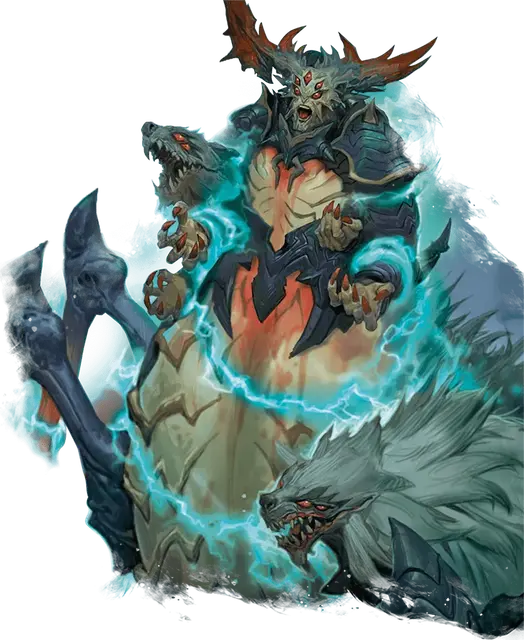

Паук-волк Миска
Miska the Wolf-Spider
Огромное Исчадие (Демон), хаотично-злое, именной НИП

Класс Доспеха 21 (природный доспех)
Хиты 399 (38к12 + 152)
Скорость 40 футов, лазая 40 футов
| мод | спас | ||
|---|---|---|---|
| СИЛ | 23 | +6 | +6 |
| ЛОВ | 18 | +4 | +11 |
| ТЕЛ | 19 | +4 | +11 |
| мод | спас | ||
|---|---|---|---|
| ИНТ | 18 | +4 | +4 |
| МДР | 21 | +5 | +12 |
| ХАР | 22 | +6 | +6 |
Навыки Восприятие +12, Проницательность +12, Скрытность +11
Сопротивление урону огонь, холод, электричество
Иммунитет к урону яд; дробящий, колющий, рубящий от немагических атак
Иммунитет к состояниям отравление
Чувства истинное зрение 120 футов, пассивное Восприятие 21
Языки Общий, Бездны, Телепатия 120 фт.
Опасность 24 (62000 опыта)
Бонус мастерства +7
Особенности
Порченная кровь. Существо, попавшее по Миску рукопашной атакой оружием, получает 7 (2к6) урона ядом.
Легендарное сопротивление (3/день). Если Миска проваливает спасбросок, он может вместо этого сделать спасбросок успешным.
Сопротивление магии. Миска совершает с преимуществом спасброски от заклинаний и прочих магических эффектов.
Паучье лазание. Миска может лазать по сложным поверхностям, включая потолки, без совершения проверок характеристик.
Чувство паутины. Находясь в контакте с паутиной, Миска знает точное местоположение всех других существ, находящихся в контакте с той же паутиной.
Хождение по паутине. Миска игнорирует ограничения перемещения, вызванные паутиной.
Действия
Мультиатака. Миска совершает одну атаку Волчьим укусом и две атаки Трезубцем Хаоса.
Волчий укус. Рукопашная атака оружием: +13 к попаданию, досягаемость 10 футов, одна цель. Попадание: 17 (2к10 + 6) колющего урона плюс 27 (6к8) урона ядом. Если цель — существо, то оно должно преуспеть в спасброске Телосложения Сл 21, иначе станет отравленным на 1 минуту. Пока цель отравлена таким образом, она становится недеспособной и не может восстанавливать хиты. Существо может повторять спасбросок в конце каждого своего хода, при успехе заканчивая на себе эффект.
Трезубец Хаоса. Рукопашная атака оружием: +13 к попаданию, досягаемость 15 футов, одна цель. Попадание: 13 (2к6 + 6) колющего урона плюс 9 (2к8) урона силовым полем.
Использование заклинаний. Миска накладывает одно из следующих заклинаний, используя Харизму в качестве базовой характеристики и без использования материальных компонентов (Сл спасброска от заклинаний 21):
• Неограниченно: маскировка [disguise self], невидимость [invisibility], волшебная рука [mage hand], малая иллюзия [minor illusion], паутина [web]
• 2/день каждое: подчинение чудовища [dominate monster], множественное внушение [mass suggestion], отражения [mirror image], телекинез [telekinesis], телепортация [teleport]
Бонусные действия
Подчиняющий приказ. Миска может магически окончить очарование и испуг на себе и любом количестве союзников в пределах 120 футов от себя.
Легендарные действия
Миска может совершить 3 легендарных действия, выбирая из представленных ниже вариантов. За один раз можно использовать только одно легендарное действие, и только в конце хода другого существа. Миска восстанавливает использованные легендарные действия в начале своего хода.
Вой. Миска кровожадно воет на одно существо в пределах 120 футов от него, которое не является Исчадием. Цель должна преуспеть в спасброске Мудрости Сл 21, иначе получая 13 (2к12) урона психической энергией.
Перескок. Миска перемещается на расстояние, не превышающее его скорость, не провоцируя атаки.
Накладывание заклинания (стоит 2 действия). Миска использует особенность Использование заклинаний.
Описание
Волк-паук Миска — легендарный лорд демонов и превосходный стратег. Его нижняя часть тела представляет собой туловище массивного бронированного паука, у него четыре руки и две огромные волчьи головы, из пастей которых стекает яд. Но самой сильной стороной Миски является его хитрый ум.
История
Много веков назад Миска возглавил орды Хаоса против сил Закона по приказу своей покровительницы, загадочной Королевы Хаоса. Казалось, господство Миски невозможно остановить.
В отчаянии противники Миски создали артефакт в виде жезла для его заточения в экстрапланарной тюрьме. После того, как Миску заперли в Пандемониуме, предмет распался на части, разлетевшись по различным планам, и стал называться жезл семи частей [rod of seven parts]. Этот артефакт является ключом к освобождению Миски из его долгого заточения.